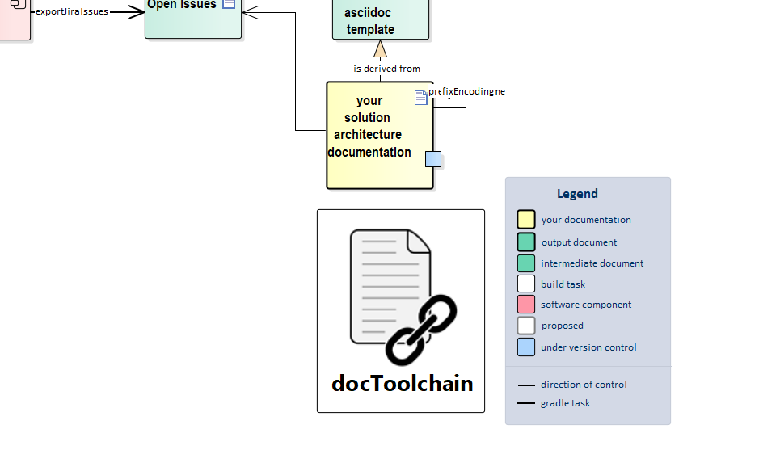

2 minutes to read
exportJiraIssues
At a Glance

About This Task
This task exports all issues for a given query or queries from Jira as either an AsciiDoc table or an Excel file.
The configuration for this task can be found within Config.gradle (gradle.properties can be used as a fallback).
Username/password is deprecated, so you need to use username/API-token instead.
An API-token can be created through https://id.atlassian.com/manage/api-tokens. We recommend that you keep username and API-token out of your GitHub repository, and instead pass them as environment variables to docToolchain.
Configuration
Jira configuration support list requests to Jira where results of each requests will be saved in a file with specifies filename. Flags saveAsciidoc & saveExcel allow you to easily configure the format in which results should be saved.
|
Important
|
The old configuration was based on the single Jira query is deprecated (single 'jql' parameter). Support for it will be removed in the near future. Please migrate to the new configuration which allows multiple Jira queries. |
Config.groovy
// Configuration for Jira related tasks
jira = [:]
jira.with {
// endpoint of the JiraAPI (REST) to be used
api = 'https://your-jira-instance'
/*
WARNING: It is strongly recommended to store credentials securely instead of commiting plain text values to your git repository!!!
Tool expects credentials that belong to an account which has the right permissions to read the JIRA issues for a given project.
Credentials can be used in a form of:
- passed parameters when calling script (-PjiraUser=myUsername -PjiraPass=myPassword) which can be fetched as a secrets on CI/CD or
- gradle variables set through gradle properties (uses the 'jiraUser' and 'jiraPass' keys)
Often, Jira & Confluence credentials are the same, in which case it is recommended to pass CLI parameters for both entities as
-Pusername=myUser -Ppassword=myPassword
*/
// the key of the Jira project
project = 'PROJECTKEY'
// the format of the received date time values to parse
dateTimeFormatParse = "yyyy-MM-dd'T'H:m:s.SSSz" // i.e. 2020-07-24'T'9:12:40.999 CEST
// the format in which the date time should be saved to output
dateTimeFormatOutput = "dd.MM.yyyy HH:mm:ss z" // i.e. 24.07.2020 09:02:40 CEST
// the label to restrict search to
label = 'label1'
// Legacy settings for Jira query. This setting is deprecated & support for it will soon be completely removed. Please use JiraRequests settings
jql = "project='%jiraProject%' AND labels='%jiraLabel%' ORDER BY priority DESC, duedate ASC"
// Base filename in which Jira query results should be stored
resultsFilename = 'JiraTicketsContent'
saveAsciidoc = true // if true, asciidoc file will be created with *.adoc extension
saveExcel = true // if true, Excel file will be created with *.xlsx extension
// Output folder for this task inside main outputPath
resultsFolder = 'JiraRequests'
/*
List of requests to Jira API:
These are basically JQL expressions bundled with a filename in which results will be saved.
User can configure custom fields IDs and name those for column header,
i.e. customfield_10026:'Story Points' for Jira instance that has custom field with that name and will be saved in a coloumn named "Story Points"
*/
requests = [
new JiraRequest(
filename:"File1_Done_issues",
jql:"project='%jiraProject%' AND status='Done' ORDER BY duedate ASC",
customfields: [customfield_10026:'Story Points']
),
new JiraRequest(
filename:'CurrentSprint',
jql:"project='%jiraProject%' AND Sprint in openSprints() ORDER BY priority DESC, duedate ASC",
customfields: [customfield_10026:'Story Points']
),
]
}
@groovy.transform.Immutable
class JiraRequest {
String filename //filename (without extension) of the file in which JQL results will be saved. Extension will be determined automatically for Asciidoc or Excel file
String jql // Jira Query Language syntax
Map<String,String> customfields // map of customFieldId:displayName values for Jira fields which don't have default names, i.e. customfield_10026:StoryPoints
}Further Reading and Resources
Read the Living Documents for Agile Projects blog post.
Source
exportJiraIssues.gradle
task exportJiraIssues(
description: 'exports all jira issues from a given search',
group: 'docToolchain'
) {
doLast {
final String taskSubfolderName = config.jira.resultsFolder
final File targetFolder = new File(targetDir + File.separator + taskSubfolderName)
if (!targetFolder.exists()) targetFolder.mkdirs()
logger.debug("Output folder for 'exportJiraIssues' task is: '${targetFolder}'")
// map configuration from Config.groovy to existing variables for compatibility with naming of Jira settings in gradle.properties
def jiraRoot = config.jira.api
def jiraProject = config.jira.project
def jiraLabel = config.jira.label
def jiraResultsFilename = config.jira.resultsFilename
def jiraDateTimeFormatParse = config.jira.dateTimeFormatParse
def jiraDateTimeOutput = config.jira.dateTimeFormatOutput
def defaultFields = 'priority,created,resolutiondate,summary,assignee,status'
def jira = new groovyx.net.http.RESTClient(jiraRoot + '/rest/api/2/')
jira.encoderRegistry = new groovyx.net.http.EncoderRegistry(charset: 'utf-8')
def headers = [
'Authorization': "Basic " + config.jira.credentials,
'Content-Type' : 'application/json; charset=utf-8'
]
def jiraRequests = config.jira.requests
if (config.jira.jql) {
logger.warn(">>>Found legacy Jira requests. Please migrate to the new Jira configuration ASAP. Old config with jql will be removed soon")
writeAsciiDocFileForLegacyConfiguration(targetFolder, jira, headers, config.jira)
}
jiraRequests.each {rq ->
logger.quiet("Request to Jira API for '${rq.filename}' with query: '${rq.jql}'")
def allHeaders = "${defaultFields},${rq.customfields.values().join(",")}"
def allFieldIds = "${defaultFields},${rq.customfields.keySet().join(",")}"
logger.quiet("Preparing headers for default & custom fields: ${allHeaders}")
logger.quiet("Preparing field IDs for default & custom fields: ${allFieldIds}")
// Save AsciiDoc file
if (config.jira.saveAsciidoc) {
def extension = 'adoc'
jiraResultsFilename = "${rq.filename}.${extension}"
logger.info("Results will be saved in '${rq.filename}.${extension}' file")
def jiraDataAsciidoc = new File(targetFolder, "${rq.filename}.${extension}")
jiraDataAsciidoc.write(".${rq.filename}\n", 'utf-8')
jiraDataAsciidoc.append("|=== \n")
// AsciiDoc table headers (custom fields map needs values here)
jiraDataAsciidoc.append("|Key ", 'utf-8')
allHeaders.split(",").each {field ->
jiraDataAsciidoc.append("|${field.capitalize()} ", 'utf-8')
}
jiraDataAsciidoc.append("\n", 'utf-8')
jira.get(path: 'search',
query: ['jql' : rq.jql.replaceAll('%jiraProject%', jiraProject).replaceAll('%jiraLabel%', jiraLabel),
'maxResults': 1000,
fields: "${allFieldIds}"
],
headers: headers
).data.issues.each { issue ->
//logger.quiet(">> Whole issue ${issue.key}:\n ${issue.fields}")
jiraDataAsciidoc.append("| ${jiraRoot}/browse/${issue.key}[${issue.key}] ", 'utf-8')
jiraDataAsciidoc.append("| ${issue.fields.priority.name} ", 'utf-8')
jiraDataAsciidoc.append("| ${Date.parse(jiraDateTimeFormatParse, issue.fields.created).format(jiraDateTimeOutput)} ", 'utf-8')
jiraDataAsciidoc.append("| ${issue.fields.resolutiondate ? Date.parse(jiraDateTimeFormatParse, issue.fields.resolutiondate).format(jiraDateTimeOutput) : ''} ", 'utf-8')
jiraDataAsciidoc.append("| ${issue.fields.summary} ", 'utf-8')
jiraDataAsciidoc.append("| ${issue.fields.assignee ? issue.fields.assignee.displayName : 'not assigned'}", 'utf-8')
jiraDataAsciidoc.append("| ${issue.fields.status.name} ", 'utf-8')
rq.customfields.each { field ->
def foundCustom = issue.fields.find {it.key == field.key}
//logger.quiet("Examining issue '${issue.key}' for custom field '${field.key}' has found: '${foundCustom}'")
jiraDataAsciidoc.append("| ${foundCustom ? foundCustom.value : '-'}\n", 'utf-8')
}
}
jiraDataAsciidoc.append("|=== \n")
} else {
logger.quiet("Set saveAsciidoc=true in '${mainConfigFile}' to save results in AsciiDoc file")
}
// Save Excel file
if (config.jira.saveExcel) {
def extension = 'xlsx'
jiraResultsFilename = "${rq.filename}.${extension}"
logger.quiet(">> Results will be saved in '${rq.filename}.${extension}' file")
//def jiraDataAsciidoc = new File(targetFolder, "${rq.filename}.${extension}")
def jiraDataXls = new File(targetFolder, jiraResultsFilename)
def jiraFos = new FileOutputStream(jiraDataXls)
Workbook wb = new XSSFWorkbook();
CreationHelper hyperlinkHelper = wb.getCreationHelper();
def sheetName = "${rq.filename}"
def ws = wb.createSheet(sheetName)
String rgbS = "A7A7A7"
byte[] rgbB = Hex.decodeHex(rgbS)
XSSFColor color = new XSSFColor(rgbB, null) //IndexedColorMap has no usage until now. So it can be set null.
XSSFCellStyle headerCellStyle = (XSSFCellStyle) wb.createCellStyle()
headerCellStyle.setFillForegroundColor(color)
headerCellStyle.setFillPattern(FillPatternType.SOLID_FOREGROUND)
def titleRow = ws.createRow(0);
int cellNumber = 0;
titleRow.createCell(cellNumber).setCellValue("Key")
allHeaders.split(",").each {field ->
titleRow.createCell(++cellNumber).setCellValue("${field.capitalize()}")
}
def lastRow = titleRow.getRowNum()
titleRow.setRowStyle(headerCellStyle)
jira.get(path: 'search',
query: ['jql' : rq.jql.replaceAll('%jiraProject%', jiraProject).replaceAll('%jiraLabel%', jiraLabel),
'maxResults': 1000,
fields: "${allFieldIds}"
],
headers: headers
).data.issues.each { issue ->
int cellPosition = 0
def row = ws.createRow(++lastRow)
Hyperlink link = hyperlinkHelper.createHyperlink(HyperlinkType.URL)
link.setAddress("${jiraRoot}/browse/${issue.key}")
Cell cellWithUrl = row.createCell(cellPosition)
cellWithUrl.setCellValue("${issue.key}")
cellWithUrl.setHyperlink(link)
row.createCell(++cellPosition).setCellValue("${issue.fields.priority.name}")
row.createCell(++cellPosition).setCellValue("${Date.parse(jiraDateTimeFormatParse, issue.fields.created).format(jiraDateTimeOutput)}")
row.createCell(++cellPosition).setCellValue("${issue.fields.resolutiondate ? Date.parse(jiraDateTimeFormatParse, issue.fields.resolutiondate).format(jiraDateTimeOutput) : ''}")
row.createCell(++cellPosition).setCellValue("${issue.fields.summary}")
row.createCell(++cellPosition).setCellValue("${issue.fields.assignee ? issue.fields.assignee.displayName : ''}")
row.createCell(++cellPosition).setCellValue("${issue.fields.status.name}")
// Custom fields
rq.customfields.each { field ->
def position = ++cellPosition
def foundCustom = issue.fields.find {it.key == field.key}
row.createCell(position).setCellValue("${foundCustom ? foundCustom.value : '-'}")
}
}
// set jira issue key column fits the content width
for(int colNum = 0; colNum<allHeaders.size()+1;colNum++) {
ws.autoSizeColumn(colNum)
}
// Set summary column width slightly wider but fixed size, so it doesn't change with every summary update
ws.setColumnWidth(4, 25*384)
wb.write(jiraFos)
} else {
logger.quiet("Set saveExcel=true in '${mainConfigFile}' to save results in Excel file")
}
}
}
}
// This method can be removed when support for legacy Jira configuration is gone
def writeAsciiDocFileForLegacyConfiguration(def targetFolder, def restClient, def headers, def jiraConfig) {
def resultsFilename = "${jiraConfig.resultsFilename}_legacy.adoc"
def openIssues = new File(targetFolder, "${resultsFilename}")
openIssues.write(".Table {Title}\n", 'utf-8')
openIssues.append("|=== \n")
openIssues.append("|Key |Priority |Created | Assignee | Summary\n", 'utf-8')
def legacyJql = jiraConfig.jql.replaceAll('%jiraProject%', config.jira.project).replaceAll('%jiraLabel%', config.jira.label)
println ("Results for legacy query '${legacyJql}' will be saved in '${resultsFilename}' file")
restClient.get(path: 'search',
query: ['jql' : legacyJql,
'maxResults': 1000,
'fields' : 'created,resolutiondate,priority,summary,timeoriginalestimate, assignee'
],
headers: headers
).data.issues.each { issue ->
openIssues.append("| ${jiraRoot}/browse/${issue.key}[${issue.key}] ", 'utf-8')
openIssues.append("| ${issue.fields.priority.name} ", 'utf-8')
openIssues.append("| ${Date.parse(jiraConfig.dateTimeFormatParse, issue.fields.created).format(jiraConfig.dateTimeFormatOutput)} ", 'utf-8')
openIssues.append("| ${issue.fields.assignee ? issue.fields.assignee.displayName : 'not assigned'}", 'utf-8')
openIssues.append("| ${issue.fields.summary} ", 'utf-8')
}
openIssues.append("|=== \n")
}Feedback
Was this page helpful?
Glad to hear it! Please tell us how we can improve.
Sorry to hear that. Please tell us how we can improve.